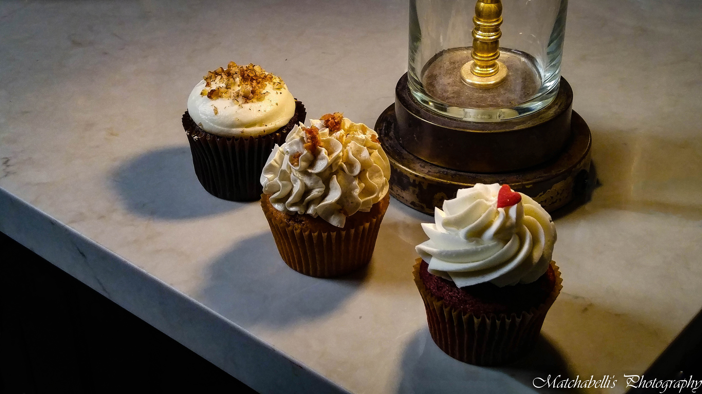

Why did I become a Food Stylist in the first place?

First of all, I love food. I mean, I really love food. I love to eat, and most of all I love to eat what I create. In essence... I enjoy baking and pastry art. I focus on my ingredients and I enjoy showing off the artful masterpieces that I create with those ingredients. Food is the universal language, it can bring people together. I want for my name and the brand my name will soon represent, to be part of this great form of communication.
About this page...
The Food Stylings of Matchabelli began in 2014, as a webpage created to showcase what I was able to successfully create while beginning my journey as a Food Stylist. In recent years, the page has grown to encompass the photographs taken from my culinary endeavours across the North American continent
Where are we?
Matchabelli's Baked Goods is currenty located in Kootenai County in the US State of Idaho. I travel extensively to Washington State and British Columbia and conduct many of my photoshoots there.